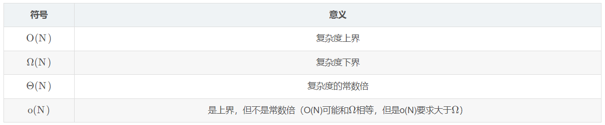

安装方法
DS1
Algorithm Analysis
input, output, definiteness确定性（每条指令都是清晰的没有歧义的）, finiteness有限性（经过一定的代码这个算法一定会停下来terminate）, effectiveness（基本的->可行的,足够基本） - 与程序不同program，程序可以一直跑下去（比如做任务规划） - 算法可以有多种描述方式，实际的编程语言，自然语言，伪代码。不一定要具体实现才能分析
Selection Sort选择排序
自然语言：find the smallest from the unsorted and place it next in the sorted lists
what to analysis
- Machine and complier-dependent run times
- run times由机器和编译器决定->太抽象
- Time and space complexities时间空间复杂度，和machine and compliers无关
- 我们假设：指令都是单线程运行的；每条指令都是简单的，都只占据一个 时间单位；整数的规模是有限的且我们有无限内存
复杂度计算
- 声明的复杂度：0；每条赋值的复杂度：1；每条判断的复杂度：1；判断分支：计算所有情况中复杂度较大者；return返回的复杂度：1
- 递归的复杂度：如T(n) = T(n-1) + 2解得T(n) = 2n + 2
- 循环的复杂度：注意退出循环的 时候还有一次判断但不运行
- 总执行次数 = n+1+n*(循环体中语句执行次数)
void add ( int a[ ][ MAX_SIZE ], int b[ ][ MAX_SIZE ], int c[ ][ MAX_SIZE ], int rows, int cols ) { int i, j ;//声明复杂度无 for ( i = 0; i < rows; i++ )//对于该循环体，复杂度为rows+1+rows(i的内部) for ( j = 0; j < cols; j++ )//对于i的内部，复杂度为cols+1+cols(j的内部) c[ i ][ j ] = a[ i ][ j ] + b[ i ][ j ];//j的内部=1 } - 